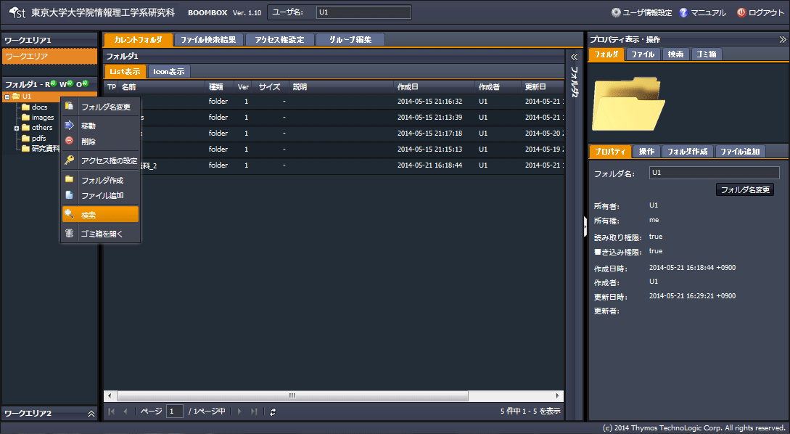
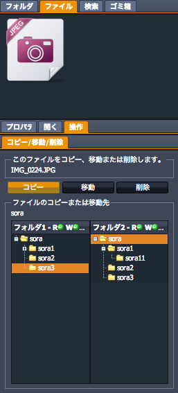
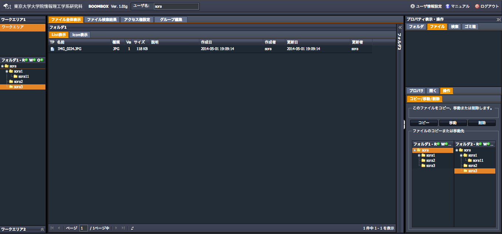

SecretFilesマニュアル
4.SecretFilesサービス(操作編)
4.2.9 ファイル、フォルダのコピー
ファイル、フォルダをコピーする手順を説明します。説明ではファイルを対象としていますが、フォルダの場合も手順は同様です。
①対象ファイル（フォルダ）を選択し右クリックメニューを開く
『コピー』をクリックします。

②自動的に以下構成の右ペインが開く
右ペインにて、【ファイルタプ】＋【フォルダタプ】が開きます。
表示された対象ファイルの移動先フォルダを下部のフォルダツリーで指定し、『コピー』をクリックします。

③ファイルは指定したフォルダにコピーされます
『コピー』をクリックすると、指定したファイルは元のフォルダから指定したフォルダにコピーされます。
